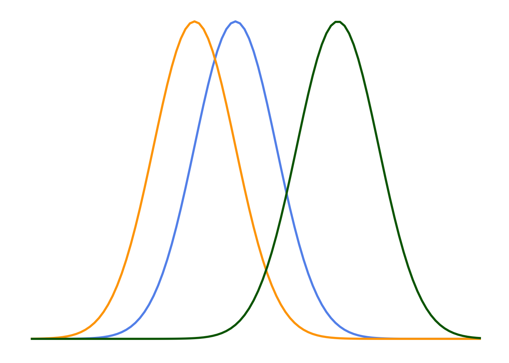
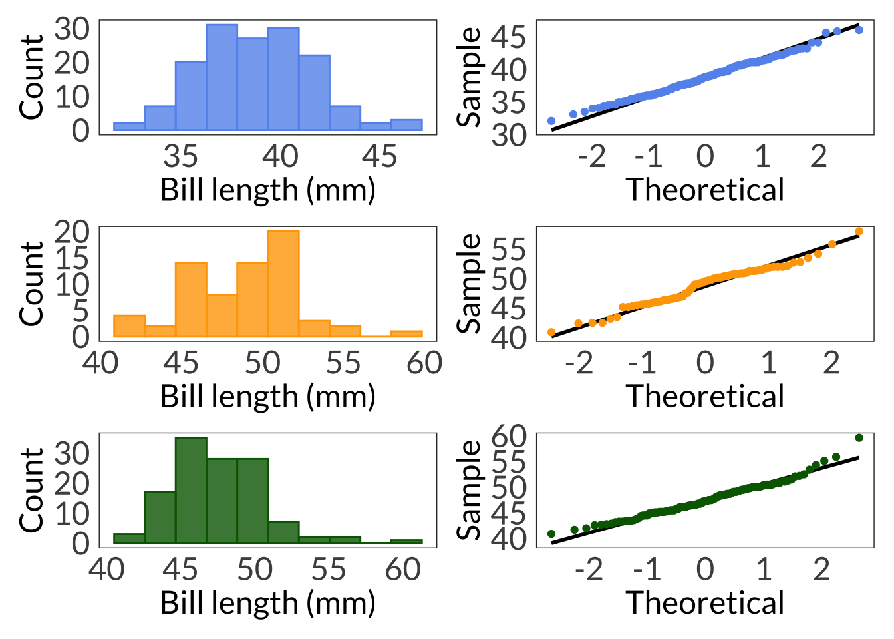
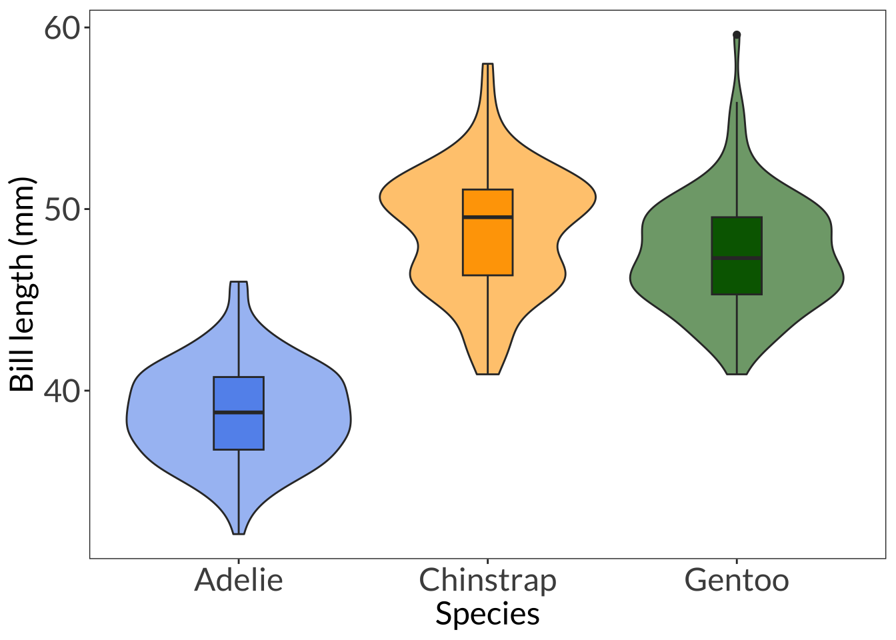

Code
library(tidyverse)
library(palmerpenguins)
library(showtext)
library(car)
font_add_google("Lato", "Lato")
showtext_auto()
library(patchwork)May 8, 2023
\[ \chi^2 = \Sigma\frac{(O-E)^2}{E} \] ### degrees of freedom \[ df = (number\;of\;rows - 1) * (number\;of\;columns - 1) \]
\[ expected = \frac{row\;total * column\;total}{table\;total} \]
\[ \frac{126 * 118}{315} = 47.2 \]
\[ \begin{align} \chi^2 &= \Sigma\frac{(O-E)^2}{E} \\ \chi^2 &= \frac{55-47.2}{47.2}+...+\frac{45-31.9}{31.9} \\ &= 15.276 \end{align} \]
trails dog_access wildlife_habitat
walking_distance 55 38 33
driving_distance 41 25 29
out_of_town 22 27 45# calculate proportions
survey_summary <- tribble(
~distance, ~trails, ~dog_access, ~wildlife_habitat,
"walking_distance", 55, 38, 33,
"driving_distance", 41, 25, 29,
"out_of_town", 22, 27, 45
) %>%
pivot_longer(cols = trails:wildlife_habitat, names_to = "responses", values_to = "counts") %>%
group_by(distance) %>%
mutate(sum = sum(counts)) %>%
ungroup() %>%
mutate(prop = counts/sum)
# do chi-square
chisq.test(survey)
Pearson's Chi-squared test
data: survey
X-squared = 15.276, df = 4, p-value = 0.004162 trails dog_access wildlife_habitat
walking_distance 47.2000 36.00000 42.80000
driving_distance 35.5873 27.14286 32.26984
out_of_town 35.2127 26.85714 31.93016col1 <- "cornflowerblue"
col2 <- "orange"
col3 <- "darkgreen"
ggplot(data.frame(x = 0:22), aes(x)) +
stat_function(geom = "line", n = 100, fun = dnorm, args = list(mean = 10, sd = 2), linewidth = 1, col = col1) +
stat_function(geom = "line", n = 100, fun = dnorm, args = list(mean = 8, sd = 2), linewidth = 1, col = col2) +
stat_function(geom = "line", n = 100, fun = dnorm, args = list(mean = 15, sd = 2), linewidth = 1, col = col3) +
theme_bw() +
theme(panel.grid = element_blank(),
axis.text = element_blank(),
axis.title = element_blank(),
axis.ticks = element_blank(),
panel.border = element_blank(),
text = element_text(family = "Lato")) 
# Adelie: 10
# Chinstrap: 8
# Gentoo: 10
adelie <- penguins %>%
filter(species == "Adelie")
adelie_hist <- ggplot(data = adelie, aes(x = bill_length_mm)) +
geom_histogram(bins = 10, fill = col1, color = col1, alpha = 0.8) +
labs(x = "Bill length (mm)", y = "Count") +
theme_bw() +
theme(panel.grid = element_blank(),
axis.text = element_text(size = 18),
axis.title = element_text(size = 18),
axis.ticks = element_blank(),
text = element_text(family = "Lato"))
adelie_qq <- ggplot(data = adelie, aes(sample = bill_length_mm)) +
stat_qq_line(linewidth = 1) +
stat_qq(col = col1) +
labs(x = "Theoretical", y = "Sample") +
theme_bw() +
theme(panel.grid = element_blank(),
axis.text = element_text(size = 18),
axis.title = element_text(size = 18),
axis.ticks = element_blank(),
text = element_text(family = "Lato"))
shapiro.test(adelie$bill_length_mm)
Shapiro-Wilk normality test
data: adelie$bill_length_mm
W = 0.99336, p-value = 0.7166chinstrap <- penguins %>%
filter(species == "Chinstrap")
chinstrap_hist <- ggplot(data = chinstrap, aes(x = bill_length_mm)) +
geom_histogram(bins = 10, fill = col2, color = col2, alpha = 0.8) +
labs(x = "Bill length (mm)", y = "Count") +
theme_bw() +
theme(panel.grid = element_blank(),
axis.text = element_text(size = 18),
axis.title = element_text(size = 18),
axis.ticks = element_blank(),
text = element_text(family = "Lato"))
chinstrap_qq <- ggplot(data = chinstrap, aes(sample = bill_length_mm)) +
stat_qq_line(linewidth = 1) +
stat_qq(col = col2) +
labs(x = "Theoretical", y = "Sample") +
theme_bw() +
theme(panel.grid = element_blank(),
axis.text = element_text(size = 18),
axis.title = element_text(size = 18),
axis.ticks = element_blank(),
text = element_text(family = "Lato"))
shapiro.test(chinstrap$bill_length_mm)
Shapiro-Wilk normality test
data: chinstrap$bill_length_mm
W = 0.97525, p-value = 0.1941gentoo <- penguins %>%
filter(species == "Gentoo")
gentoo_hist <- ggplot(data = gentoo, aes(x = bill_length_mm)) +
geom_histogram(bins = 10, fill = col3, color = col3, alpha = 0.8) +
labs(x = "Bill length (mm)", y = "Count") +
theme_bw() +
theme(panel.grid = element_blank(),
axis.text = element_text(size = 18),
axis.title = element_text(size = 18),
axis.ticks = element_blank(),
text = element_text(family = "Lato"))
gentoo_qq <- ggplot(data = gentoo, aes(sample = bill_length_mm)) +
stat_qq_line(linewidth = 1) +
stat_qq(col = col3) +
labs(x = "Theoretical", y = "Sample") +
theme_bw() +
theme(panel.grid = element_blank(),
axis.text = element_text(size = 18),
axis.title = element_text(size = 18),
axis.ticks = element_blank(),
text = element_text(family = "Lato"))
(adelie_hist + adelie_qq) / (chinstrap_hist + chinstrap_qq) / (gentoo_hist + gentoo_qq)Warning: Removed 1 rows containing non-finite values (`stat_bin()`).Warning: Removed 1 rows containing non-finite values (`stat_qq_line()`).Warning: Removed 1 rows containing non-finite values (`stat_qq()`).Warning: Removed 1 rows containing non-finite values (`stat_bin()`).Warning: Removed 1 rows containing non-finite values (`stat_qq_line()`).Warning: Removed 1 rows containing non-finite values (`stat_qq()`).
Shapiro-Wilk normality test
data: gentoo$bill_length_mm
W = 0.97272, p-value = 0.01349Levene's Test for Homogeneity of Variance (center = median)
Df F value Pr(>F)
group 2 2.2425 0.1078
339 Call:
aov(formula = bill_length_mm ~ species, data = penguins)
Terms:
species Residuals
Sum of Squares 7194.317 2969.888
Deg. of Freedom 2 339
Residual standard error: 2.959853
Estimated effects may be unbalanced
2 observations deleted due to missingness Df Sum Sq Mean Sq F value Pr(>F)
species 2 7194 3597 410.6 <2e-16 ***
Residuals 339 2970 9
---
Signif. codes: 0 '***' 0.001 '**' 0.01 '*' 0.05 '.' 0.1 ' ' 1
2 observations deleted due to missingness Tukey multiple comparisons of means
95% family-wise confidence level
Fit: aov(formula = bill_length_mm ~ species, data = penguins)
$species
diff lwr upr p adj
Chinstrap-Adelie 10.042433 9.024859 11.0600064 0.0000000
Gentoo-Adelie 8.713487 7.867194 9.5597807 0.0000000
Gentoo-Chinstrap -1.328945 -2.381868 -0.2760231 0.0088993\[ \sum_{i=1}^{k}\sum_{j=1}^{n}(\bar{x}_i - \bar{x})^2 \]
\[ \sum_{i=1}^{k}\sum_{j=1}^{n}({x}_{ij} - \bar{x}_i)^2 \]
\[ \sum_{i=1}^{k}\sum_{j=1}^{n}({x}_{ij} - \bar{x})^2 \]
\[ \frac{SS_{among\;group}}{k-1} \] #### within group
\[ \frac{SS_{within\;group}}{n-k} \] #### total
\[ \frac{SS_{total}}{kn-1} \]
\[ \frac{MS_{among\;group}}{MS_{within\;group}} \]
ggplot(data = penguins, aes(x = species, y = bill_length_mm, fill = species)) +
geom_violin(alpha = 0.6) +
geom_boxplot(width = 0.2) +
scale_fill_manual(values = c(col1, col2, col3)) +
labs(x = "Species", y = "Bill length (mm)") +
theme_bw() +
theme(panel.grid = element_blank(),
axis.text = element_text(size = 18),
axis.title = element_text(size = 18),
text = element_text(family = "Lato"),
legend.position = "none") Warning: Removed 2 rows containing non-finite values (`stat_ydensity()`).Warning: Removed 2 rows containing non-finite values (`stat_boxplot()`).
\[ H = \frac{12}{n(n+1)}\sum_{i = 1}^{k}\frac{R^2_i}{n_i}-3(n+1) \]
\[ \eta^2 = \frac{H - k + 1}{n - k} \]
@online{bui2023,
author = {Bui, An},
title = {Lecture 06 Figures},
date = {2023-05-08},
url = {https://an-bui.github.io/ES-193DS-W23/lecture/lecture-06_2023-05-08.html},
langid = {en}
}